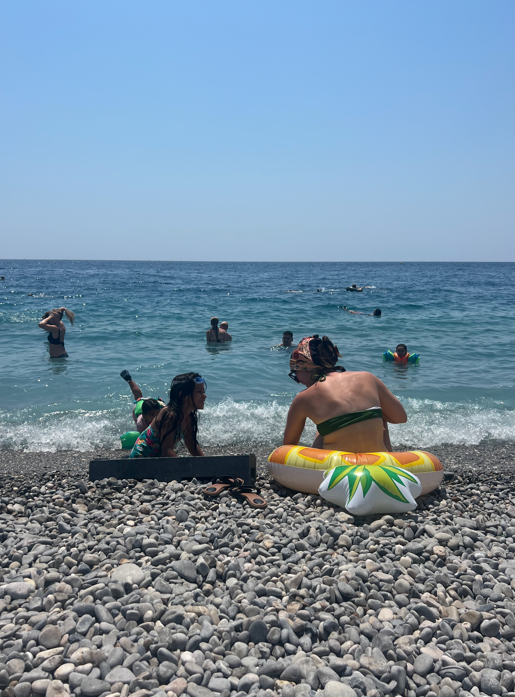
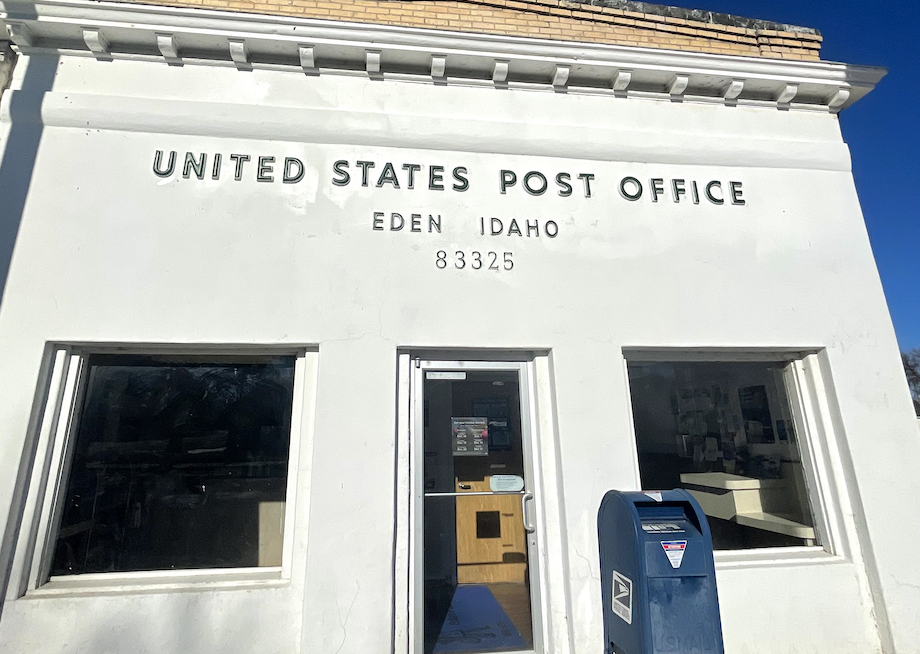

Travel Journal
Why Travel? Because it’s fun, sometimes, and fills in time. Very important question is: Why do you care so much about justifying your life to other people?
Lists
Wanting to Destinations
- Deadsea
- Machu Picchu / Patagonia
- Northern Lights
- Tsavo National Park
- Portofino, Italy
My favorite places
- Oahu, Hawaii
- Sintra, Portugal
- Saint-Jean-Cap-Ferrat, France
- La Jolla, San Diego
Stories
Hawaii in 2023 2022
My brother is geting married in about a month in Hawaii. I've been preoccupied with holidays that I haven't let the fact sink in. Do you ever try to force yourself to feel a certain way? Alia and Justin have been dating for quite a while that it comes to no suprise and I doubt any of the dynamic of the relationship will change. - Jun 09 2022
Directly from my journals while I was traveling
Europe 2022

It was one of the calmest sunrise I've ever seen. Sitting here on the beach of Nice, I learn that the smallest deed is
better than the greatest intention.
Days are moving as expected and I'm always in awe of watching people walk by me. What are they thinking about? Does he/she have similar worries as I do?
Sometimes, I forget we all share the same struggle to some capacity.
- Jul 19 2022
Hawaii part 2 2022
I have to wonder if I’ll ever come back to this place. Will I ever make the time, will I have the strength and health to come back to this place? Today I surfed for for the first time in Kauai. This nice gentleman named Trava at Poipu beach let me use his surfboard. He seems to run a surf lesson business. 6 days here in Kauai had lots of up and downs. I’m flying out in a couple hours here and I’ve met some cool people and was definitely a learning experience for me. Although things didn’t go as smoothly and wonderfully as I expected with Shana, I want to cherish this moment as an opportunity to be glad that I did this. We all live and learn and I probably will not travel with someone that I do not know that well again. Life have always given me so much to do so many things. I want to give that back by not just taking but contributing. In some ways, I think living in Hawaii won’t be enough for me to truly contribute which is why I think I belong in the mainland at least for the time being. But maybe one day, I’ll come back here with my wife or family and we can make it our beautiful place. - Jun 09 2022
Road trip - 2020

This road trip was important to me.
I didn’t have any life changing experience or an eye opening epiphany that would alter me-
at least for now. Rather, I had time to think about myself, time to be alone, and just be
present. When I was on the road, I didn’t think about the past as much as I would have thought
nor my future. I just really enjoyed the discoveries I was making as I went explored the roads
I have never been to. - Dec 08 2020
Kevin vs. Ireland - 2019
Be brutally honest with yourself. - Nov 30 2019
Oscar & Kevin vs. Europe - 2018
It was nice just to forget everything and leave everything behind after the stressful week we had about 10 days ago. Oscar and I both did good in school getting about 3.9 GPAs for this term. (Second time in a row getting all As). I’m proud of myself for the progress and I thank God for supporting me and being with me throughout the process. - Dec 17 2018
Oregon2018
I’m at a great state of mind yet there’s a hallow side in my heart that is missing, I'm guessing it's love. Someone I can share my Friday night with rather always spending it alone or with your friends. La Vie En Rose always makes me rethink what love really means. It’s not sexual. It’s having that someone in your life that can be part of your life in a capacity than anyone. Someone who can fight the battle with you than supporting you. - Oct 12 2018